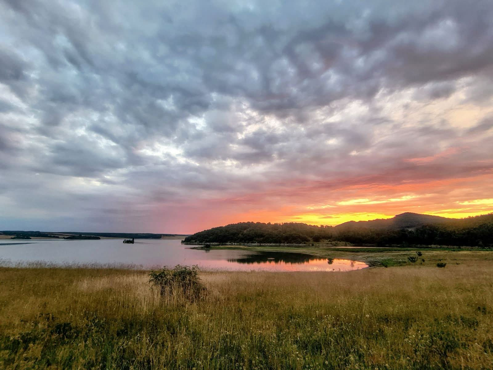
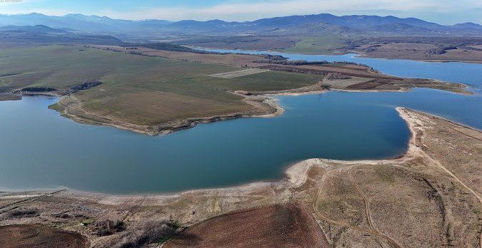

Област Хасково · България
Николово
Село с дълга памет край язовир Тракиец, на 24 км от Хасково.
История
От Ески кьой до Николово
До 1906 г. селото носи името Ески кьой, по-късно Старо село, а през 1950 г. е преименувано на Николово. В него живеят само православни християни.
Прочети историята →
Природа
Водите на Тракиец
В землището на селото е разположен язовир Тракиец, който дълги години снабдява град Хасково с питейна вода.
Предание
Легендата за „Света Богородица"
Според местно предание най-голямата църква в Хасково — „Света Богородица" — е построена по проекта на църквата в Николово.
Памет
Музеят на селото
В Николово има музей, който пази живия спомен за миналите времена и разказва историята на хората от селото.
Виж забележителностите →Традиция
Съборът в края на август
Всяка година в последната събота на август (около 28 август) селото се събира на традиционния събор.
Елате до Николово
На 24 км от Хасково — вижте как да стигнете.